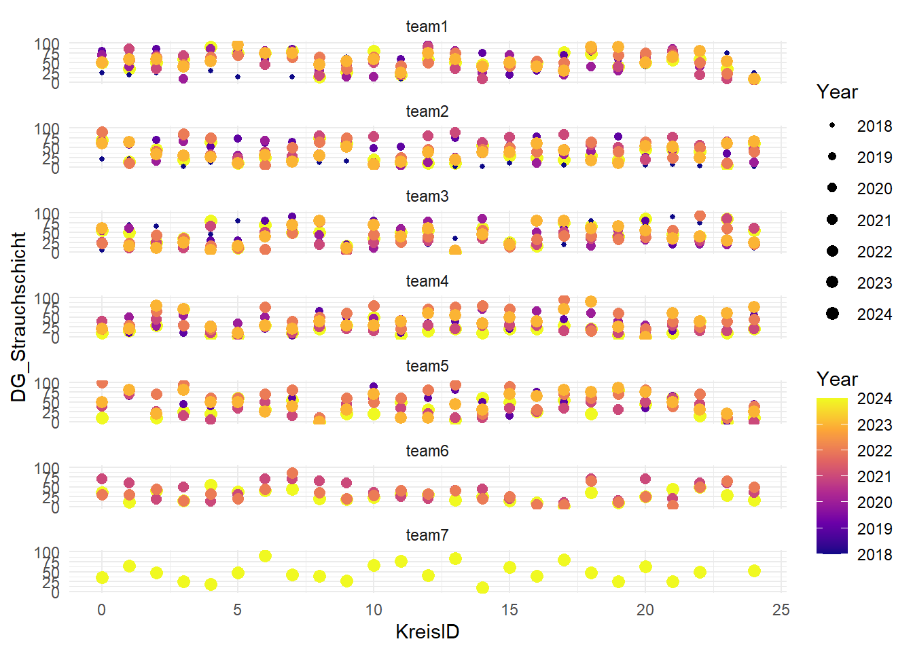

# .##################################################################################
# Daten(vor)verarbeitung Fallstudie WPZ ####
# Modul Research Methods, HS24. Autor/in ####
# .##################################################################################Daten(vor)verarbeitung
Projektaufbau RStudio-Projekte
Vor den eigentlichen Auswertungen müssen einige vorbereitende Arbeiten unternommen werden. Die Zeit, die man hier investiert, wird in der späteren Projektphase um ein vielfaches eingespart. Im Skript soll die Ordnerstruktur des Projekts genannt werden, damit der Arbeitsvorgang auf verschiedenen Rechnern reproduzierbar ist.
Arbeitet mit Projekten, da diese sehr einfach untereinander ausgetauscht und somit auch reproduziert werden können; es gibt keine absoluten Arbeitspfade sondern nur relative. Der Datenimport (und auch der Export) kann mithilfe dieser relativen Pfaden stark vereinfacht werden. Projekte helfen alles am richtigen Ort zu behalten. (mehr zur Arbeit mit Projekten: Link)
Aufbau von R-Skripten
Im Kopf des Skripts zuerst immer den Titel des Projekts sowie die Autor:innen des Skripts nennen. Hier soll auch die Herkunft der Daten ersichtlich sein und falls externe Daten verwendet werden, sollte geklärt werden, wer die Datenherrschaft hat (Rehdaten: Forschungsgruppe WILMA).
Beschreibt zudem folgendes:
- Ordnerstruktur; ich verwende hier den Projektordner mit den Unterordnern:
- Skripts
- Data
- Results
- Plots
- Verwendete Daten
Ein Skript soll in R eigentlich immer nach dem selbem Schema aufgebaut sein. Dieses Schema beinhaltet (nach dem bereits erwähnten Kopf des Skripts) 4 Kapitel:
- Datenimport
- Datenvorverarbeitung
- Analyse
- Visualisierung
Bereitet euer Skript also nach dieser Struktur vor. Nutzt für den Text, welcher nicht Code ist, vor dem Text das Symbol #. Wenn ihr den Text als Titel definieren wollt, der die grobe Struktur des Skripts absteckt, baut in wie in folgendem Beispiel auf:
# .###################################################################################
# METADATA ####
# .###################################################################################
# Datenherkunft ####
# ...
# .###################################################################################
# 1. DATENIMPORT ####
# .###################################################################################Libraries laden
library("readr")
library("dplyr")
library("ggplot2")
library("purrr")Daten laden
Herunterladen der Daten der Feldaufnahmen von Moodle (Aufgabe3_Feldaufnahmen_alle_Gruppen.zip), Einlesen, Sichtung der Datensätze und der Datentypen.
Verschiedene Dinge funktionierten nicht auf Anhieb:
- Daten Gruppe 1: leere Zeilen zwischen jedem Dateneintrag (R ist intelligent genug dies beim Einlesen zu erkennen)
- Daten Gruppe 5: leere Zeilen zwischen jedem Dateneintrag (R ist intelligent genug dies beim Einlesen zu erkennen)
- Daten Gruppe 6:
- Excelfile –> csv daraus machen
- Koordinaten fehlen, diese werden benötigt um die Daten über die Kreise eindeutig mit den LIDAR-Daten zusammenzuführen –> einfügen aus Zuteilung_Kreise_Aufnahmen_Landforst_HS24.docx
- Kreise als Datentyp character, müssen numeric sein
- Daten Gruppe 7: Koordinaten fehlen, diese werden benötigt um die Daten über die Kreise eindeutig mit den LIDAR-Daten zusammenzuführen –> einfügen aus Zuteilung_Kreise_Aufnahmen_Landforst_HS24.docx
Versucht wenn möglich solche Dinge jeweils direkt mit R zu lösen, dies ist vorallem bei grösseren Datensätzen extrem hilfreich, damit die Datensätze zu einem sauberen Gesamtdatensatz zusammengefügt werden können.
df_team1 <- read_delim("datasets/fallstudie_n/Aufgabe3_Feldaufnahmen_alle_Gruppen/Aufgabe_2_Team1.csv", delim = ";")
df_team2 <- read_delim("datasets/fallstudie_n/Aufgabe3_Feldaufnahmen_alle_Gruppen/FelderhebungenSilhwaldKreise.csv", delim = ",")
df_team3 <- read_delim("datasets/fallstudie_n/Aufgabe3_Feldaufnahmen_alle_Gruppen/Felderhebungen Waldstruktur Team 3 pink (Gruppe 4).csv", delim = ";")
df_team4 <- read_delim("datasets/fallstudie_n/Aufgabe3_Feldaufnahmen_alle_Gruppen/Felderhebung_Gruppe 5.csv", delim = ";")
df_team5 <- read_delim("datasets/fallstudie_n/Aufgabe3_Feldaufnahmen_alle_Gruppen/TEAM 5 (violett) - Felderhebungen Waldstruktur.csv", delim = ",")
df_team6 <- read_delim("datasets/fallstudie_n/Aufgabe3_Feldaufnahmen_alle_Gruppen/Felderhebung_Team6.csv",
delim = ";",
locale = locale(encoding = "latin1")) %>%
mutate(Punkt = parse_number(Punkt))
df_team7 <- read_delim("datasets/fallstudie_n/Aufgabe3_Feldaufnahmen_alle_Gruppen/gr7_ground_thruth_lidar.csv", delim = ";")
# hier können die Probekreise mit den Angaben zur Anzahl Rehlokalisationen und der
# LIDAR-basierten Ableitung der Waldstruktur eingelesen werden
df_lidar <- read_delim("datasets/fallstudie_n/Aufgabe3_LIDAR_Waldstruktur_Reh_Kreise_241011.csv", delim = ";")
str(df_lidar)
## spc_tbl_ [305 × 7] (S3: spec_tbl_df/tbl_df/tbl/data.frame)
## $ Anz_reh_lokalisationen: num [1:305] 0 0 0 0 0 0 0 0 0 0 ...
## $ x : num [1:305] 684900 684900 684900 684900 684875 ...
## $ y : num [1:305] 237100 237125 237150 237175 237075 ...
## $ DG_us_2014 : num [1:305] 0.0903 0.2717 0.468 0.7407 0.1811 ...
## $ DG_os_2014 : num [1:305] 0.908 0.959 0.871 0.986 0.86 ...
## $ DG_us_2022 : num [1:305] 0.269 0.823 0.936 0.359 0.245 ...
## $ DG_os_2022 : num [1:305] 0.945 0.99 0.953 0.997 0.898 ...
## - attr(*, "spec")=
## .. cols(
## .. Anz_reh_lokalisationen = col_double(),
## .. x = col_double(),
## .. y = col_double(),
## .. DG_us_2014 = col_double(),
## .. DG_os_2014 = col_double(),
## .. DG_us_2022 = col_double(),
## .. DG_os_2022 = col_double()
## .. )
## - attr(*, "problems")=<externalptr>
# Die eingelesenen Datensätze anschauen und versuchen zu einem Gesamtdatensatz
# verbinden. Ist der Output zufriedenstellend?
df_gesamt <- bind_rows(df_team1, df_team2, df_team3, df_team4, df_team5,df_team6,df_team7)
str(df_gesamt)
## spc_tbl_ [175 × 14] (S3: spec_tbl_df/tbl_df/tbl/data.frame)
## $ Kreis (r 12.5m) : num [1:175] 0 1 2 3 4 5 6 7 8 9 ...
## $ X : num [1:175] 684900 684875 684875 684875 684850 ...
## $ Y : num [1:175] 237175 237125 237175 237250 237225 ...
## $ Deckungsgrad Rubus sp. [%] : num [1:175] 20 20 15 55 17 10 15 10 20 65 ...
## $ DG Strauchschicht [%] (0.5-3m): num [1:175] 50 35 50 60 90 75 75 80 15 27 ...
## $ DG Baumschicht [%] (ab 3m) : num [1:175] 30 40 65 70 60 70 60 45 63 40 ...
## $ Punkt : num [1:175] NA NA NA NA NA NA NA NA NA NA ...
## $ Rubus sp. : num [1:175] NA NA NA NA NA NA NA NA NA NA ...
## $ Strauchschicht : num [1:175] NA NA NA NA NA NA NA NA NA NA ...
## $ Baumschicht : num [1:175] NA NA NA NA NA NA NA NA NA NA ...
## $ Kreis : num [1:175] NA NA NA NA NA NA NA NA NA NA ...
## $ DG_Rubus_sp : num [1:175] NA NA NA NA NA NA NA NA NA NA ...
## $ DG_Strauchschicht : num [1:175] NA NA NA NA NA NA NA NA NA NA ...
## $ DG_Baumschicht : num [1:175] NA NA NA NA NA NA NA NA NA NA ...
## - attr(*, "spec")=
## .. cols(
## .. `Kreis (r 12.5m)` = col_double(),
## .. X = col_double(),
## .. Y = col_double(),
## .. `Deckungsgrad Rubus sp. [%]` = col_double(),
## .. `DG Strauchschicht [%] (0.5-3m)` = col_double(),
## .. `DG Baumschicht [%] (ab 3m)` = col_double()
## .. )
## - attr(*, "problems")=<externalptr>Aufgabe 1
- 1.1 Einfügen zusätzliche Spalte pro Datensatz mit der Gruppenzugehörigkeit (Team1-7)
- 1.2 Spaltenumbenennung damit die Bezeichungen in allen Datensätzen gleich sind und der Gesamtdatensatz ohne Probleme zusammengefügt werden kann
- → Befehle mutate und rename, mit pipes (alt:
%>%, neu:|>) in einem Schritt möglich
- → Befehle mutate und rename, mit pipes (alt:
Musterlösung
# .#################################################################################
# 2. DATENVORVERARBEITUNG #####
# .#################################################################################
df_team1 <- df_team1 |>
mutate(team = "team1") |>
rename(
KreisID = "Kreis (r 12.5m)",
DG_Rubus = "Deckungsgrad Rubus sp. [%]",
DG_Strauchschicht = "DG Strauchschicht [%] (0.5-3m)",
DG_Baumschicht = "DG Baumschicht [%] (ab 3m)"
)
df_team2 <- df_team2 |>
mutate(team = "team2") |>
rename(
KreisID = "Kreis (r 12.5m)",
DG_Rubus = "Deckungsgrad Rubus sp. [%]",
DG_Strauchschicht = "DG Strauchschicht [%] (0.5-3m)",
DG_Baumschicht = "DG Baumschicht [%] (ab 3m)"
)
df_team3 <- df_team3 |>
mutate(team = "team3") |>
rename(
KreisID = "Kreis (r 12.5m)",
DG_Rubus = "Deckungsgrad Rubus sp. [%]",
DG_Strauchschicht = "DG Strauchschicht [%] (0.5-3m)",
DG_Baumschicht = "DG Baumschicht [%] (ab 3m)"
)
df_team4 <- df_team4 |>
mutate(team = "team4") |>
rename(
KreisID = "Kreis (r 12.5m)",
DG_Rubus = "Deckungsgrad Rubus sp. [%]",
DG_Strauchschicht = "DG Strauchschicht [%] (0.5-3m)",
DG_Baumschicht = "DG Baumschicht [%] (ab 3m)"
)
df_team5 <- df_team5 |>
mutate(team = "team5") |>
rename(
KreisID = "Kreis (r 12.5m)",
DG_Rubus = "Deckungsgrad Rubus sp. [%]",
DG_Strauchschicht = "DG Strauchschicht [%] (0.5-3m)",
DG_Baumschicht = "DG Baumschicht [%] (ab 3m)"
)
df_team6 <- df_team6 |>
mutate(team = "team6") |>
rename(
KreisID = "Punkt",
DG_Rubus = "Rubus sp.",
DG_Strauchschicht = "Strauchschicht",
DG_Baumschicht = "Baumschicht"
)
df_team7 <- df_team7 |>
mutate(team = "team7") |>
rename(
KreisID = "Kreis",
DG_Rubus = "DG_Rubus_sp",
DG_Strauchschicht = "DG_Strauchschicht",
DG_Baumschicht = "DG_Baumschicht"
)Das Learning aus den Vorverarbeitungen die ich für euch übernommen habe und aus Aufgabe 1 ist, dass beim Erfassen und Dokumentieren von Daten aus verschiedenen Quellen darauf geachtet werden sollte, dies möglichst einheitlich zu tun (Dateiformate, Spalten, Bezeichnungen, Datentypen, usw.), damit kann man sich viel Arbeit ersparen. Hilfreich ist in diesem Zusammenhang immer ein einheitliches Feldprotokoll resp. eine Vorlage für die Erfassung der Daten zu erstellen.
Aufgabe 2
Zusammenführen der Teildatensätze zu einem Datensatz
Musterlösung
df_gesamt <- bind_rows(df_team1, df_team2, df_team3, df_team4, df_team5, df_team6, df_team7)Aufgabe 3
Verbinden (join) des Datensatzes der Felderhebungen mit dem Datensatz der LIDAR Variablen in den Reh-Kreisen (Aufgabe3_LIDAR_Waldstruktur_Reh_Kreise_241011.csv).
Ziel: ein Datensatz mit allen Kreisen der Felderhebung, angereichert mit den Umweltvariablen Understory und Overstory aus den LIDAR-Daten (DG_us_2022, DG_os_2022) aus dem LIDAR-Waldstruktur-Datensatz. –> Welche Art von join? Welche Spalten zum Verbinden (join_by()) der Datensätze
Musterlösung
df_with_LIDAR <- left_join(df_gesamt, df_lidar, join_by(X == x, Y == y))Aufgabe 4
Scatterplot der korrespondondierenden Umweltvariablen aus den Felderhebungen gegen die Umweltvariablen aus den LiDAR-Daten (DG_xy_2022) erstellen (zusätzlich Einfärben der Gruppen und Regressionslinie darüberlegen). Korrelieren die Feldaufnahmen und die LiDAR basierte Waldstruktur?
Im LiDAR Datensatz gibt es dieselben Variablen der Waldstruktur aus der LiDAR-Befliegung 2014. Ihr könnt untersuchen wie sich diese verändert haben und wie gut oder eben auch nicht sie mit euren Feldaufnahmen übereinstimmen.
Musterlösung
# .#####################################################################################
# 4. VISUALISERUNG #####
# .#####################################################################################
ggplot(df_with_LIDAR, aes(DG_us_2022, DG_Strauchschicht, color = team)) +
geom_point() +
stat_smooth(method = "lm") +
xlim(0, 1) +
ylim(0, 100) +
geom_abline(slope = 100, intercept = 0, linetype = "dashed", color = "red")Musterlösung
write_delim(df_with_LIDAR, "datasets/fallstudie_n/df_with_lidar_2024.csv", delim = ";")(Zusatz-)Aufgabe 5
Herunterladen der Felderhebungsdaten von Moodle aus den vergangenen Jahren. Zusammenführen aller Datensätze. Explorative Datenanalyse zu den Veränderungen der Erhebungen ground truth LiDAR über die Zeit und zum Zusammenhang mit den LiDAR-basierten Waldstrukturvariablen aus den zwei Befliegungszeiträumen (2014 und 2022)
!Achtung! es sind nicht alle Jahre gleich viele Teams an den Erhebungen beteiligt gewesen, daher gib es nicht für alle Teams in allen Jahren Daten.
Musterlösung
files <- list.files("datasets/fallstudie_n/Aufgabe3_Feldaufnahmen_vergangene_Jahre", pattern = "*.csv", full.names = TRUE)
df_ground_truth <- files %>%
map_df(~ read_delim(.x, delim = ";") %>%
mutate(Jahr = gsub("df_ground_truth_|\\.csv$", "", basename(.x))))
df_without_LIDAR <- df_with_LIDAR %>% dplyr::select(KreisID:team) %>% mutate(Jahr = "2024")
df_ground_truth <- bind_rows(df_without_LIDAR, df_ground_truth)
df_ground_truth_with_LIDAR <- left_join(df_ground_truth, df_lidar, join_by(X == x, Y == y))
df_ground_truth_with_LIDAR %>%
ggplot(aes(KreisID, DG_Strauchschicht, color = as.numeric(Jahr), size = as.numeric(Jahr))) +
facet_wrap(~team, ncol = 1) +
geom_point() +
scale_color_viridis_c(option = "plasma") +
scale_size_continuous(range = c(1, 3)) +
labs(color = "Year", shape = "Year", size = "Year") +
theme_minimal()
Musterlösung
df_without_LIDAR <- df_without_LIDAR %>% dplyr::select(-Jahr)
write_delim(df_without_LIDAR, "datasets/fallstudie_n/df_ground_truth_2024.csv", delim = ";")